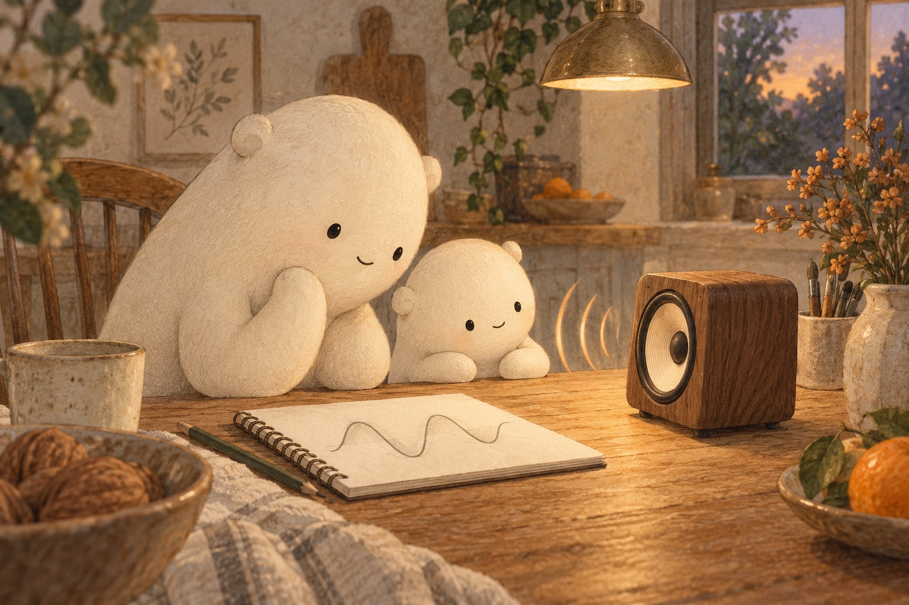
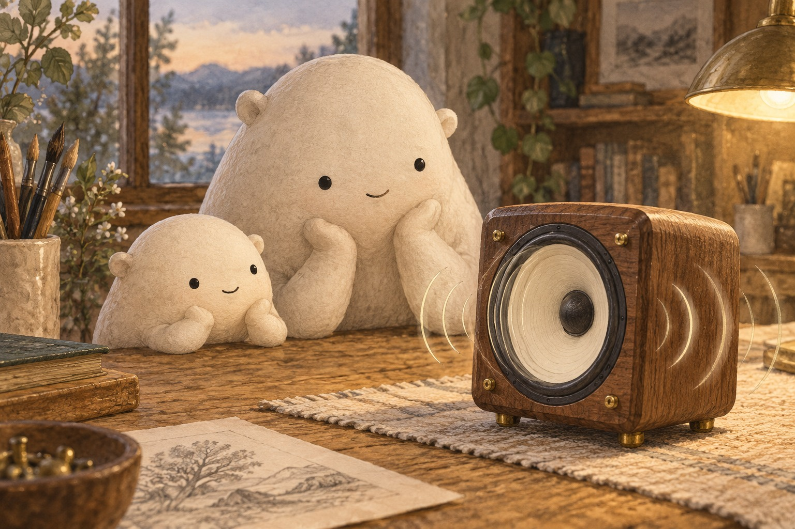

Follow the little wiggle
How Speakers Turn Waves Into Sound

A soft note came from the speaker on the table. Little Wonderer found the smooth wave drawn in the notebook. “Could that wiggle become a sound?” Big Wonderer nodded. A speaker changes an electric signal into vibration: a back-and-forth motion. For a pure note, that motion follows the smooth shape of a sine wave.

The speaker’s cone was a thin piece of paper shaped like a shallow bowl. Behind it, a coil of wire sat near a magnet. The changing signal made the coil push and pull against the magnet. The attached cone moved back and forth, squeezing nearby air, then letting it spread out.

Big stretched plastic wrap over a bowl and added a pinch of rice. Little hummed nearby. Nothing moved yet. Big gently tapped the bowl, and a few grains hopped. The tight wrap was vibrating beneath them. Rice made a small motion easier to see. Little drew the tiny hops.
- speaker
- a device that changes an electric signal into sound
- cone
- the thin paper or plastic part that moves air
- coil
- wire wound into loops
- magnet
- a part that pushes or pulls on the coil when its signal changes
- vibration
- a back-and-forth wiggle
- pressure wave
- a traveling pattern of squeezed and spread-out air
- eardrum
- a thin surface inside the ear that vibrates with sound
- pitch
- how high or low a sound seems